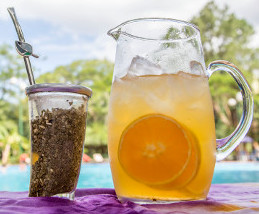
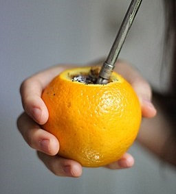
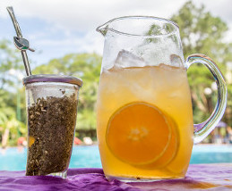
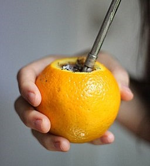

How To Prepare Mate
To start preparing the traditional mate, we need to have all the materials: yerba mate, a straw, a mate cup, and hot water.

Note: If you are going to use a mate cup made from gourd or wood, you will have to cure
it (prepare the
cup) before using it.
Put inside the mate yerba and hot water and leave it until the next day, and it will be ready to
use.

Step 1
Heat water between 158°F to 167°F (70°C/75°c). If it’s your first-time drinking mate I recommend not to drink it too hot.

Step 2
While the water is heating take the mate cup and fill it with ¾ parts of yerba.

Step 3
Cover the mouth of the mate with your hand and shake it. Return the mate to its original position but leave the yerba at 45°.

Step 4
Pour a little warm water (around 122°F) into the emptiest part of the mate.
Step 5
Insert the straw in the same place as in the previous step to the bottom of the mate.

Step 6
Pour the hot water from the side of the straw until the mate is filled.

It's Ready!
Other Ways To Prepare Mate
There are more ways to drink Mate if the traditional way is not what you prefer.
Sugar: Mate has a naturally bitter taste, that is the way many people in Argentina use to put
a
little portion of sugar each time a mate is served or in the water recipient. It is also valid to
use
sweetener or honey as an alternative option.
Mate with flavor: Another alternative is to add flavor to your mates, like little pieces of
lemon, orange, or grapefruit.
Tereré: Especially drink it in Paraguay, tereré is a mate but with cold water. It is the best
preferred in summer when the heats arise. It can also be made with juice or different natural herbs.
Mate Cosido (Boil Mate): It is Yerba Mate in a tea bag, you can also use a strainer to filter
the
mate tea. The only difference is that you have to boil the water before serving.
Mate with milk: As an alternative to water, you can also serve it with milk. It also works
for
the boil mate.
Grapefruit: You can make a mate in a grapefruit!
 


